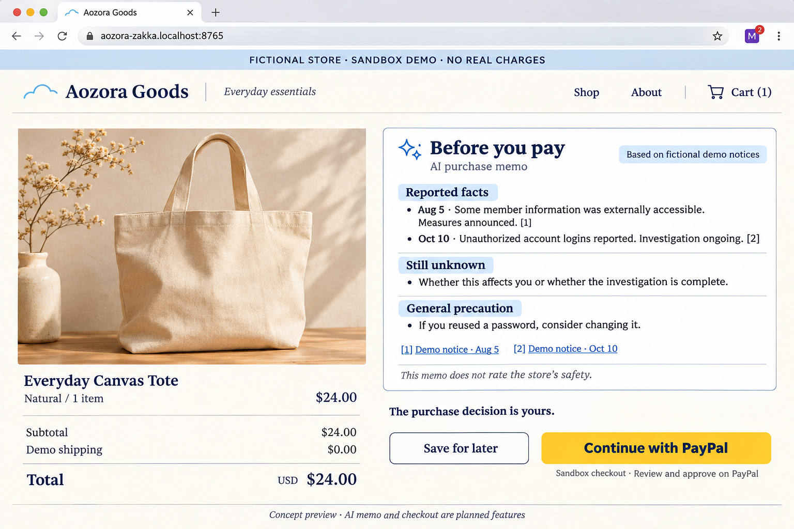

あおぞら雑貨店：AI購入前メモから
PayPal Sandbox決済まで
2026年11月10日 JST ／ ユーザーが採用したシナリオの実装計画。店舗・AIメモ・Sandbox注文処理の実装ドラフトを作成。実AI・実Sandboxの通し確認は未完了。実装と計画の差分、再開手順は末尾の実装記録を参照。
Chrome拡張0.2.0を変更せず、24 USDのトートバッグについて、公表情報の確認 → AIメモ → 利用者の判断 → Sandbox承認・決済確定を一続きで実演する。
旧 実装計画および API・DB案のうち、このデモに関する範囲は本書を優先する。旧案のNorthwind店舗、拡張内AI画面、複数商品、汎用assist APIは今回採用しない。既存の公開JSON・実店舗対応は変更しない。
1. 今あるもの・今回作るもの
既存：公開JSON生成・配信、Chrome拡張0.2.0の店舗照合とポップアップ、固定の架空店舗データ。単体64件成功と通常Chromeでの銀のさら表示を確認済み。定時公開の初回実績は別途観測待ち。
追加：Laravel内のデモ店舗、架空資料ページ、明示操作によるAIメモ、Sandbox専用注文処理、英語のセットアップ・実演手順。商品はTOTE-001 / Everyday Canvas Tote / 数量1 / USD 24.00、デモ送料・税額0。実際の配送・請求はない。
拡張のコード・manifest・権限・デモデータ・配布版を変更しない。DDD全体の再設計、Incidentの続報統合、ストア申請、実決済、返金・定期購入、AIによる自動購入は本工程に含めない。

画像は生成した検討用イメージ。実装済み画面ではない。ブラウザー枠やPayPalボタンの細部は実環境・公式SDKに従う。
2. 画面と購入シナリオ
- 商品画面。常時「FICTIONAL STORE / SANDBOX / NO REAL CHARGES」を表示。拡張の既存デモバッジ2を確認し、必要ならポップアップで資料概要を見る。
- 購入確認画面。商品・数量1・合計24.00 USDと「Create AI purchase memo」を表示。ページを開くだけではAIに送信しない。
- 生成中 → 検証済みメモ表示。Reported facts / Still unknown / General precautionを分離し、資料リンクを付ける。生成元・資料版・生成時刻を表示。
- 「Save for later」で画面内に見送り状態を表示。注文・決済APIを呼ばない。商品へ戻れる。「Continue with PayPal」は利用者の明示操作で開始する。
- 公式SDKのSandbox承認画面。承認・キャンセル・エラーを区別。AIの判断やメモ生成完了だけで支払いを始めない。
- 店舗側で決済照合後に完了表示。内部注文番号、PayPal注文ID、capture ID、USD 24.00を表示。未確定時は「確認中」とし、購入ボタンを連打させない。
AI失敗時は元資料と「生成できませんでした」を表示し、再試行・見送り・資料を読んで購入を選べる。固定文をAI出力に見せかけない。提出前には本物のAI応答による成功を別途確認する。
3. Chrome拡張を変えない接続構成
第一候補は http://aozora-zakka.localhost:8765/demo-shop。これは予定URLであり稼働中ではない。既存拡張はホスト名で固定デモに照合するため、同じホストならポートやパスを変えても拡張の改修は不要。
Laravelの既存 services/mrst を独立したローカルデモ環境・専用DBで起動し、Webポートをループバックへ公開する。既存の serve-test-site.mjs が8765を使用中なら止めるかデモ側を別ポートにする。PHP実行環境は既存Docker構成を利用し、既存本番コンテナーやDBは操作しない。
店舗HTML、メモAPI、注文APIは同一オリジンとし、セッションとCSRFを使う。現行mrstに routes/api.php はないため、routes/web.php に専用の demo-shop ルート群を追加する。admin配下へ置かない。
最初の実装ゲート：.localhostでのSDK読込、承認ウィンドウ、戻り先、セッション継続、CSRF、必要なCSPホストをSandboxで確認する。HTTPが使えない場合は同じホスト名のローカルHTTPSを試す。.localhostで完走できない場合は、拡張を勝手に変えず、既存手動デモモードを使うホスト型デモ案を再検討する。
審査員向けにはソースから同じ環境を立ち上げる手順を提供する。Sandbox businessアプリ・buyerテストアカウント・AI接続設定を前提として明示し、秘密値を公開リポジトリへ入れない。各自のSandbox資格情報で再現できるテンプレートを用意する。審査用の特別なアクセスを用意する場合は提出欄で方法を案内する。
4. DDD：責務とデータ契約
既存の収集・審査・公開に、デモ購入支援とSandbox注文の境界を追加する。用語、責務、モデル、不変条件に今回の採用事項を追記する。
- DemoCatalog / DemoNotice：商品価格と架空資料の原本をサーバーが所有。固定データの版を持ち、実際のIncident・公開JSONへ混入させない。
- PurchaseMemo：資料の読み解き支援。資料版、商品、言語、prompt版、モデルで入力ハッシュを作り、facts / unknowns / general_tipsを返す。新しい公表事実の承認ではなく、Incidentや決済を変更しない。
- DemoOrder：注文と決済照合を所有。所有セッション、商品・金額スナップショット、冪等キー、PayPal ID、capture結果を保持。AIメモは任意参照であり、決済の認可情報ではない。
通常Chromeで確認した拡張とデモ店舗は、メッセージ通信やDOM読取りで接続しない。同じ固定資料の意味を共有する。extensions/chrome/src/demo-data.js のDEMO-001が比較元。引用や日付を足して事実を捏造しない。
5. AIメモの契約と実装単位
予定配置：app/Services/Ai/PurchaseMemoGenerator.php（契約）、SakuraPurchaseMemoGenerator.php、結果検証用オブジェクト、app/Http/Controllers/DemoShop/PurchaseMemoController.php。既存Sakuraクライアントの接続・失敗処理の慣例を参照し、Incident審査用プロンプトを流用しない。
予定API：POST /demo-shop/memo。入力は商品IDと言語enのみ。サーバーが資料を選択し、任意URL・本文・個人情報を受け付けない。応答は memo_id, generated_by, model, input_hash, generated_at, facts[{text,source_ids}], unknowns[], general_tips[], sources[{id,path}]。
- 資料を非命令の入力として区切る。AIには外部ツールや決済呼出し権限を与えない。
- factsは1〜4件、各項目に1件以上の既知source ID。unknownsとgeneral_tipsは各1〜3件、各文500文字以内、入力は10,000文字以下、AI応答は32KiB以下を初期上限とする。
- URLはモデルに生成させず、source IDからサーバーの固定ルートへ解決する。未知ID、空応答、不正JSON、上限超過、HTML、根拠のない安全保証や購入命令を拒否。禁止語チェックだけを意味の正しさの保証とは扱わず、固定資料の事実・不明点との整合も評価する。
- 正常出力だけ24時間キャッシュ。資料・商品・prompt・モデル・言語の変更で失効。セッションから同じメモを再表示できる。生成はセッション当たり毎分3回、実AIはデモ専用の日次50呼出しを初期上限として原子的に確保し、再試行も課金枠に数える。
- 既存のAI予算・設定との統合方法を実装前に確認。購入メモ用の上限・資格情報を別設定で持ち、msjdの合議・公開承認を起動しない。
6. Sandbox決済・状態と復旧
ブラウザーは公式JavaScript SDK v6をSandbox URLから読み込む。公開client IDのみ渡す。Laravelは既存HTTPクライアントでOAuthとOrders v2を利用する計画で、PHP SDKの追加依存は設けない。SDKの具体的メソッドは実装時点の公式手順で確認する。
POST /demo-shop/orders：product_id, quantity=1, client_request_id(UUID), memo_id?(同一セッション)。金額・通貨の入力は拒否。catalogから2400 cents / USDを確定し、PayPalには文字列24.00を送る。POST /demo-shop/orders/{uuid}/capture：所有者とローカル状態を確認し、PayPalから注文を取得。ID、intent、金額、通貨、受取merchant、内部注文との対応、APPROVEDを照合してからcaptureする。GET /demo-shop/orders/{uuid}：所有セッションへ保存済み状態を表示。POST /demo-shop/orders/{uuid}/reconcile：結果不明をPayPal照会で回復する。GET表示で新しい決済を起こさない。- createとcaptureには別々の永続UUIDを
PayPal-Request-Idとして使う。同じ操作の再試行は同じキー・同じ内容。ローカルは(owner, client_request_id)を一意とし、同キーの異なる内容は409。 - 短いDBトランザクションで処理の所有権・状態を予約し、コミットしてからHTTPを実行。完了更新も短いトランザクション。外部通信中にDB行ロックを保持しない。同時要求とプロセス停止からの回復をテストする。
- create/captureのタイムアウトを未決済と断定しない。
create_unknown / capture_unknownで保存し、同じ冪等キーでの再試行・PayPal照会により回復。APIごとのキー保持期間を確認し、その期間を超えてcreateの結果が不明なら新規注文を自動生成せず運用確認へ送る。 - PayPal応答がPENDINGなら確認中、DECLINED等の確定失敗なら失敗。captureのCOMPLETEDと金額・通貨等の一致を確認した場合だけ
completed。ブラウザーのonApproveや「成功」の自己申告は完了根拠にしない。 - キャンセル通知ではcompletedを巻き戻さない。承認画面を閉じたことと、PayPal上の決済取消は別。ブラウザーが閉じられても保存済みIDで照会可能にする。
予定DB demo_orders：UUID、owner_session_hash、product_id、quantity、amount_minor、currency、catalog_version、任意memo_id、client_request_id、create_request_id、capture_request_id、paypal_order_id、paypal_capture_id、状態、処理予約期限、確定エラーコード、時刻。PayPal IDと操作キーに一意制約。住所・カード番号・payerの生応答は保存しない。Factoryは実装工程の最初に、created / completed / unknown / otherOwnerを用意する。
フラグ DEMO_SHOP_ENABLED=false、DEMO_AI_ENABLED=false を既定値とし、Sandbox以外は拒否。REST接続先は https://api-m.sandbox.paypal.com 固定。専用Sandbox資格情報を使い、本番鍵・公開バケット資格情報をデモ環境へ渡さない。
7. 先に用意するテストデータとTDD工程
本計画と同時に scenario.json と cases.json を作成。全件架空・固定値。scenarioは商品、既存拡張と一致する資料、AI成功結果、PayPal応答例を持つ。casesは変更入力・通信障害・境界値と期待結果を持つ。HTTP応答例は契約テスト用の最小フィールドであり、SDK仕様の完全なスキーマではない。
- P0：接続成立を確認。拡張のハッシュを記録。feature flag/host/秘密分離の失敗テストから着手し、.localhostでSDK承認往復とサーバーcreate/captureの最小接続をSandboxで確認。資格情報不足やホスト制限があれば、店舗UI全体より先に解決。
- P1：店舗と資料。DemoShopPageTestを失敗させてからcatalog、Blade、静的資産、資料ルートを実装。実行用固定資料は
resources/data/demo-shop/へ配置予定。テストfixtureを実行時に読む構成にしない。既存拡張との意味・日付比較をテストで固定。 - P2：メモ。PurchaseMemoTestと純粋な結果検証テストを先行。成功、根拠欠落、プロンプト注入、上限、失敗、キャッシュを確認してから実AIを接続。
- P3：注文。モデルとFactory、migration、DemoOrderTestを先行。二重クリック、別セッション、金額改ざん、結果不明からの復旧を通す。最後にPayPal UIへ結合。
- P4：一続きの検証。既存のPlaywrightが利用できる範囲で独立したデモテストツールを作る。配置候補は
tools/demo-shop/、拡張のtoolsは編集しない。新しい依存追加は必要性を確認してから。実AI＋Sandboxの手動試験とモック試験を別記録にする。 - P5：提出固定。英語README、設定例、3分未満の動画、ソース・ライセンス・完全な起動手順を用意。提出コミット・拡張ハッシュ・動画の版を揃え、デモ用秘密や個人情報が含まれないことを確認する。
必須ケース
- 正常：資料2件とAIメモの対応、24 USDでcreate→承認→capture→完了、見送りは注文なし、同一要求の再送で注文・captureが増えない。
- 異常：商品不明、他人の注文、CSRF、client価格入力、live設定、未知出典、AI不正JSON・HTML・安全保証、429/5xx/timeout、キャンセル、未承認、金額・通貨・受取人の不一致、PENDING。
- 境界：数量0/1/2、メモ0/4/5 facts、500/501文字、入力10,000/10,001文字、応答32KiB/超過、毎分3/4回、日次50/51回、キャッシュ24時間直前/到達、同時capture2本、外部成功後のDB保存失敗、結果不明後の再読込。
実行方法（対象テストを作成済み）
# services/mrst内、隔離されたmrst_test環境で対象だけ実行
php artisan test --compact --filter=DemoShop
php artisan test --compact --filter=PurchaseMemo
php artisan test --compact --filter=DemoOrder
# リポジトリルートのGit Bashから、既存の使い捨てDocker CI環境で全体を検証
bash bin/mrst-ci-test.bash
# extensions/chrome内で既存拡張の回帰確認
npm testPHP側は既存のPostgreSQL用テスト構成とFactory慣例に合わせる。HTTPは宛先を絞ったfakeと予期しない通信の禁止、時計・待機はfakeを使う。各工程で期待した理由のRED → 実装 → GREENを記録する。PHP変更時はPint。デモのCSS/JavaScriptはpublic配下から直接配信し、新しい依存追加やViteビルドを必要としない。
8. 完了条件と残る確認
- 既存拡張ファイルの変更0、既存64テスト成功。通常Chromeで架空店舗の既存バッジと資料が表示される。
- 実AI出力・資料参照・失敗表示を確認。購入判断は利用者が行い、AIなしでも資料確認と見送りが可能。
- 実Sandboxで成功・キャンセル、モックで異常・復旧・同時実行を検証。PayPalの保存済み注文・capture IDと完了画面が一致。
- 審査員が別環境から手順どおり再現できる。Devpostの登録、英語資料、公開リポジトリ、OSSライセンス、動画を揃える。提出期限は2026年11月13日05:00 JST、規約上の審査終了は12月16日01:00 JST。審査用アクセスの提供方法を提出時に確定する。
未確認：Sandbox資格情報・buyerアカウントの準備状況、.localhostでのSDK実動作、デモ用AIキー/モデル、審査員の再現手順。HTTP fakeとブラウザ模擬応答の成功は、実プロバイダとの疎通成功を意味しない。
DDDは今、用語・責務・不変条件・状態遷移をまとめる。画面調整やクラス分割は実装で更新する。既存の「同一事案の続報を別IDで配信」の不整合は明記して保留し、本デモのために既存DBを統合しない。
9. 参照
- PayPal JavaScript SDK v6：Sandboxスクリプト、公開client ID、コンポーネント構成。
- PayPal Checkout公式手順：注文作成とcapture。
- PayPal冪等性：操作別のキー、同じ操作の再試行、API別の保持期間。
- ハッカソン公式規約。確認：2026年11月10日。
- 公開JSON・Chrome拡張の実績。実データ公開の実績と本デモ計画を区別する。
10. 実装ドラフトの記録・再開地点
計画PR #15を基点とした別ブランチ codex/aozora-demo-implementation で実装。Chrome拡張の変更0。本番デプロイ・マージは行わず、人間の判断に残す。英語の起動・実演・検証手順を追加した。
- 店舗・架空資料：Blade、直接配信するCSS/JS、固定catalog。localhost専用かつ機能フラグ初期OFF、Sandbox以外は拒否。
- AI：実際に設定先モデルを呼ぶが、初版は自由要約を狭め、出典ごとに許可した英語文の選択・順序付けとする。未知出典・任意の追加文を拒否。資料の数により事実文は実質最大2件。モデル品質とAPI互換性は実キーで別途確認する。
- 決済：永続注文と操作別キー、所有セッション、固定価格、短時間のDB予約と期限・所有トークン。外部HTTP中にDBロックを保持しない。結果不明を成功や新規注文へ置き換えない。5時間を超えた不明操作の自動再送は止めて手動確認とする。
- 復旧：ブラウザはsessionStorageで元の要求キーを保存。再読込でも別注文を作らない。ブラウザのセッション喪失時は自動復旧せず、Sandbox管理画面での確認が必要。
- TDD：店舗・メモ・注文テストの404失敗を確認後に実装。captureの空JSON形式、結果不明照会の状態保持は回帰テストの失敗を確認して修正。ブラウザ側の再送テストも未実装の失敗を確認後に実装。
- 画面確認：PCとスマホで、メモと資料リンク、見送り、完了、再読込、AI障害、保留からの照会、キャンセルを確認。PayPal SDK・AI・注文APIはテスト内の模擬応答。スクリーンショットはローカルのstorage/app/demo-browser-checkに保存。
- 残り：実AI・実Sandbox・通常Chrome拡張との通し確認、実並行プロセスと外部成功後DB失敗の障害注入、公開審査用環境・英語動画・提出情報。計画の全40ケースを完了扱いにしない。